CODING AGENTS AS PIXEL WORLD MODELS
traex/GPT-5.6-Sol · 0052
点击播放 · 原生 RGB 像素
逐轮保存的候选
回放视频、检查图与代码变化。
每份候选均可单独播放。实际图片检查记录在下方工具轨迹中。
候选 01播放与检查图
点击播放 · 原生 RGB 像素
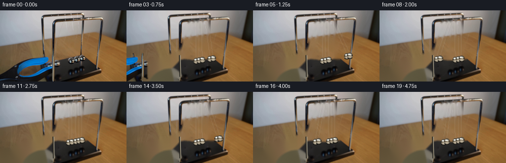
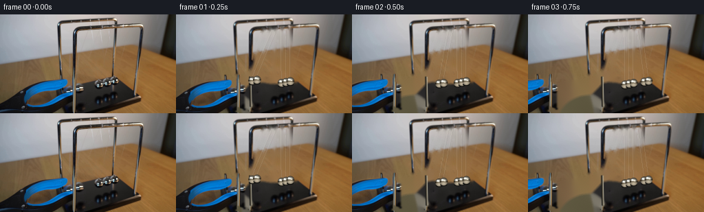
展开代码变化
--- 上一保存版本
+++ 本次保存版本
@@ -0,0 +1,167 @@
+from pathlib import Path
+import math
+import cv2
+import numpy as np
+from PIL import Image
+import artifact_io
+
+CASE = Path(__file__).resolve().parent
+W,H,S = 256,144,4
+src = np.asarray(Image.open(CASE/'first_frame.png').convert('RGB'))
+
+# Isolate the blue/black hand grabber from the supplied photograph. The
+# conservative silhouette intentionally includes its soft photographic edge.
+bgr = cv2.cvtColor(src, cv2.COLOR_RGB2BGR)
+hsv = cv2.cvtColor(bgr, cv2.COLOR_BGR2HSV)
+gray = cv2.cvtColor(bgr, cv2.COLOR_BGR2GRAY)
+Y,X = np.ogrid[:H,:W]
+blue = (hsv[:,:,0] > 84) & (hsv[:,:,0] < 126) & (hsv[:,:,1] > 92) & (X < 129) & (Y > 80)
+dark = (gray < 77) & (X < 116) & (Y > 87)
+# Avoid taking the cradle's black plinth as part of the tool.
+dark &= (X < 73) | ((Y < .30*X + 101) & (Y > 86)) | ((Y > .30*X + 106) & (X < 103))
+tool_core = ((blue | dark).astype(np.uint8)*255)
+tool_core = cv2.morphologyEx(tool_core, cv2.MORPH_CLOSE, np.ones((5,5),np.uint8))
+tool_core = cv2.dilate(tool_core, np.ones((3,3),np.uint8), 1)
+tool_alpha = cv2.GaussianBlur(tool_core,(0,0),0.7).astype(np.float32)/255.0
+
+# Construct the locked clean plate locally. This removes only the moving
+# apparatus (grabber, balls, and their hair-thin strings); all camera texture,
+# grain, table and frame stay from frame zero.
+remove = tool_core.copy()
+# Two balls at the raised left position and the three resting balls.
+for c,r in [((108,99),13),((117,98),12),((142,101),10),((153,100),10),((164,98),10)]:
+ cv2.circle(remove,c,r,255,-1,cv2.LINE_AA)
+# Existing suspension threads, confined below the upper rail.
+for a,b in [((127,21),(104,98)),((137,20),(116,98)),
+ ((144,20),(142,102)),((154,20),(153,101)),((165,20),(164,100))]:
+ cv2.line(remove,a,b,255,2,cv2.LINE_AA)
+# Inpainting works better with a small coherent boundary around the crowded balls.
+remove = cv2.dilate(remove,np.ones((3,3),np.uint8),1)
+plate_bgr = cv2.inpaint(bgr, remove, 4, cv2.INPAINT_TELEA)
+plate = cv2.cvtColor(plate_bgr,cv2.COLOR_BGR2RGB)
+
+# The tool hid the lower portion of the nearer chrome upright. Restore that
+# fixed piece from the colors of the visible upright immediately above it.
+def restore_chrome(im):
+ hi = cv2.resize(im,(W*S,H*S),interpolation=cv2.INTER_CUBIC)
+ # rear edge/shadow, chrome, and pin highlight; slight lean matches perspective
+ cv2.line(hi,(108*S,134*S),(107*S,91*S),(28,28,25),5,cv2.LINE_AA)
+ cv2.line(hi,(109*S,134*S),(108*S,91*S),(91,82,66),4,cv2.LINE_AA)
+ cv2.line(hi,(110*S,134*S),(109*S,91*S),(203,198,177),2,cv2.LINE_AA)
+ return cv2.resize(hi,(W,H),interpolation=cv2.INTER_AREA)
+plate = restore_chrome(plate)
+
+# Equilibrium geometry follows the perspective line in the source photograph.
+eqx = np.array([141.0,147.3,153.6,159.9,166.2])
+eqy = np.array([102.0,100.8,99.6,98.4,97.2])
+pivy = np.array([20.0,20.0,20.0,20.0,20.0])
+length = eqy-pivy
+AMP = 0.405
+
+def positions(t):
+ """Ideal two-ball Newton cradle with gently damped repeated transfers."""
+ p = np.stack([eqx.copy(),eqy.copy()],1)
+ if t < 0.12:
+ theta = -AMP
+ active=(0,1)
+ else:
+ # Time from release. Each stage is max->impact or impact->max.
+ u=(t-0.12)/0.53
+ stage=int(math.floor(max(0,u)))
+ z=u-stage
+ cycle=stage//4
+ a=AMP*(0.91**cycle)
+ phase=stage%4
+ if phase==0: # raised left pair falling inward
+ theta=-a*math.cos(z*math.pi/2); active=(0,1)
+ elif phase==1: # transmitted pair climbing right
+ theta= a*math.sin(z*math.pi/2); active=(3,4)
+ elif phase==2: # right pair returning
+ theta= a*math.cos(z*math.pi/2); active=(3,4)
+ else: # transmitted pair climbing left
+ theta=-a*math.sin(z*math.pi/2); active=(0,1)
+ for i in active:
+ p[i,0]=eqx[i]+length[i]*math.sin(theta)
+ p[i,1]=pivy[i]+length[i]*math.cos(theta)
+ return p
+
+def render_sphere(canvas, cx, cy, radius, seed=0):
+ """Paint a small chrome ball with environment reflections at 4x AA."""
+ yy,xx=np.mgrid[:H*S,:W*S]
+ x=xx/S; y=yy/S
+ dx=(x-cx)/radius; dy=(y-cy)/radius
+ rr=dx*dx+dy*dy
+ mask=np.clip((1.05-rr)*10,0,1)
+ inside=rr<=1.08
+ # Convex chrome: dark rim, warm tabletop, white window and blue-black floor.
+ z=np.sqrt(np.maximum(0,1-np.minimum(rr,1)))
+ rim=22+115*z**1.6
+ warm=np.clip((dy+.05)*95,0,72)
+ val=rim+warm
+ rgb=np.stack([val*1.05+18,val*.99+15,val*.86+12],2)
+ # Broad cool sky reflection on upper-left hemisphere.
+ sky=np.exp(-((dx+.18)**2/0.28+(dy+.38)**2/0.055))*128
+ rgb += sky[:,:,None]*np.array([.80,.92,1.0])
+ # sharp rectangular/specular glints characteristic of the source
+ gl=np.exp(-((dx+.38)**2/.018+(dy+.43)**2/.035))*210
+ gl+=np.exp(-((dx-.30)**2/.04+(dy+.16)**2/.018))*135
+ rgb += gl[:,:,None]
+ # dark horizon stripe reflected around the center
+ band=np.exp(-((dy-.02)/.16)**2)*55
+ rgb -= band[:,:,None]
+ rgb=np.clip(rgb,0,255)
+ a=(mask*inside).astype(np.float32)[...,None]
+ canvas[:] = canvas*(1-a)+rgb*a
+
+def draw_scene(base, pos, t):
+ hi=cv2.resize(base,(W*S,H*S),interpolation=cv2.INTER_CUBIC).astype(np.float32)
+ # Soft moving reflections/shadows in the lacquered black base.
+ shadow=np.zeros((H*S,W*S),np.uint8)
+ for i,(cx,cy) in enumerate(pos):
+ # reflection is strongest beneath balls near the center, weaker at amplitude
+ cv2.ellipse(shadow,(int(cx*S),int((117+(cx-eqx[i])*.025)*S)),
+ (int(5.2*S),int(9*S)),0,0,360,110,-1,cv2.LINE_AA)
+ shadow=cv2.GaussianBlur(shadow,(0,0),3.2*S).astype(np.float32)/255
+ hi *= (1-shadow[...,None]*.28)
+
+ # Five sets of suspension filaments. A neighboring pair of bright/dark
+ # strands gives the thin translucent string seen in the photo.
+ for i,(cx,cy) in enumerate(pos):
+ px=eqx[i]
+ # rear and front attachment points are separated slightly in perspective
+ for off,alpha,col in [(-1.2,.40,(238,235,218)),(1.15,.26,(100,94,82))]:
+ a=(int((px+off)*S),int(pivy[i]*S)); b=(int((cx+off*.32)*S),int((cy-4.7)*S))
+ layer=hi.copy()
+ cv2.line(layer,a,b,col,1,cv2.LINE_AA)
+ hi=hi*(1-alpha)+layer*alpha
+
+ # contact shadows then balls, back-to-front
+ for i,(cx,cy) in enumerate(pos):
+ # tiny dark lower contact edge helps separate touching balls
+ cv2.ellipse(hi,(int(cx*S),int((cy+4.8)*S)),(int(5.2*S),int(2.0*S)),0,0,360,(17,17,15),-1,cv2.LINE_AA)
+ render_sphere(hi,cx,cy,5.8,i)
+ # mild optical softness, matching the shallow-focus source
+ out=cv2.resize(np.clip(hi,0,255).astype(np.uint8),(W,H),interpolation=cv2.INTER_AREA)
+ return out
+
+def add_tool(frame, frame_index):
+ # The hand opens/releases off-frame while withdrawing left. At frame 1 the
+ # blue jaws remain briefly visible; by frame 3 they have exited completely.
+ shift = -int(round(17 + 29*(frame_index-1)))
+ M=np.float32([[1,0,shift],[0,1,1 if frame_index==1 else 0]])
+ rgb=cv2.warpAffine(src,M,(W,H),flags=cv2.INTER_LINEAR,borderMode=cv2.BORDER_CONSTANT)
+ aa=cv2.warpAffine(tool_alpha,M,(W,H),flags=cv2.INTER_LINEAR,borderMode=cv2.BORDER_CONSTANT)
+ # slight motion blur in direction of withdrawal
+ aa=cv2.GaussianBlur(aa,(5,1),0)
+ return np.clip(frame*(1-aa[...,None])+rgb*aa[...,None],0,255).astype(np.uint8)
+
+frames=[src.copy()]
+for k in range(1,20):
+ t=k/4.0
+ frame=draw_scene(plate.copy(),positions(t),t)
+ if k<=3:
+ frame=add_tool(frame,k)
+ frames.append(frame)
+frames=np.stack(frames).astype(np.uint8)
+assert frames.shape==(20,144,256,3) and np.array_equal(frames[0],src)
+artifact_io.save(frames,CASE)
候选 02播放与检查图
点击播放 · 原生 RGB 像素

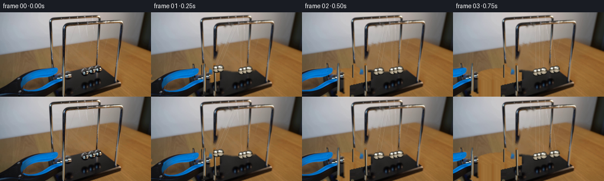
展开代码变化
--- 上一保存版本
+++ 本次保存版本
@@ -24,21 +24,41 @@
tool_core = cv2.dilate(tool_core, np.ones((3,3),np.uint8), 1)
tool_alpha = cv2.GaussianBlur(tool_core,(0,0),0.7).astype(np.float32)/255.0
-# Construct the locked clean plate locally. This removes only the moving
-# apparatus (grabber, balls, and their hair-thin strings); all camera texture,
-# grain, table and frame stay from frame zero.
-remove = tool_core.copy()
+# Construct the locked clean plate locally. Remove the small moving metal
+# parts with texture-aware inpainting. Keep the three already-vertical cords:
+# repainting those extremely fine source details is less natural than retaining
+# them and drawing the moving cords over them.
+remove = np.zeros((H,W),np.uint8)
# Two balls at the raised left position and the three resting balls.
for c,r in [((108,99),13),((117,98),12),((142,101),10),((153,100),10),((164,98),10)]:
cv2.circle(remove,c,r,255,-1,cv2.LINE_AA)
-# Existing suspension threads, confined below the upper rail.
-for a,b in [((127,21),(104,98)),((137,20),(116,98)),
- ((144,20),(142,102)),((154,20),(153,101)),((165,20),(164,100))]:
+# Only the two initially angled suspension threads need a clean background.
+for a,b in [((127,21),(104,98)),((137,20),(116,98))]:
cv2.line(remove,a,b,255,2,cv2.LINE_AA)
-# Inpainting works better with a small coherent boundary around the crowded balls.
+# Inpainting works well for these narrow regions.
remove = cv2.dilate(remove,np.ones((3,3),np.uint8),1)
-plate_bgr = cv2.inpaint(bgr, remove, 4, cv2.INPAINT_TELEA)
+plate_bgr = cv2.inpaint(bgr, remove, 3, cv2.INPAINT_TELEA)
plate = cv2.cvtColor(plate_bgr,cv2.COLOR_BGR2RGB)
+
+# Replace the broad grabber silhouette explicitly instead of asking an
+# inpainting algorithm to bridge a third of the picture. Above the base it is
+# warm tabletop sampled from an unobstructed part of the same scanline; below
+# the oblique rear edge it is the black lacquer sampled from the clean center.
+soft_tool = cv2.GaussianBlur(tool_core,(0,0),.8).astype(np.float32)/255.0
+fill = plate.copy()
+for y in range(H):
+ for x in range(121):
+ if not tool_core[y,x]:
+ continue
+ base_here = (x > 80 and y >= 143.0-.23*x)
+ if base_here:
+ sx = min(150,max(124,x+35))
+ sy = min(H-1,max(0,y))
+ else:
+ sx = min(238,205 + (x % 22))
+ sy = min(118,max(74,y))
+ fill[y,x] = plate[sy,sx]
+plate = np.clip(plate*(1-soft_tool[...,None])+fill*soft_tool[...,None],0,255).astype(np.uint8)
# The tool hid the lower portion of the nearer chrome upright. Restore that
# fixed piece from the colors of the visible upright immediately above it.
@@ -48,6 +68,9 @@
cv2.line(hi,(108*S,134*S),(107*S,91*S),(28,28,25),5,cv2.LINE_AA)
cv2.line(hi,(109*S,134*S),(108*S,91*S),(91,82,66),4,cv2.LINE_AA)
cv2.line(hi,(110*S,134*S),(109*S,91*S),(203,198,177),2,cv2.LINE_AA)
+ # rear frame's left foot, briefly hidden by the upper jaw
+ cv2.line(hi,(86*S,111*S),(86*S,90*S),(25,25,23),5,cv2.LINE_AA)
+ cv2.line(hi,(87*S,111*S),(87*S,90*S),(151,143,123),2,cv2.LINE_AA)
return cv2.resize(hi,(W,H),interpolation=cv2.INTER_AREA)
plate = restore_chrome(plate)
候选 03播放与检查图
点击播放 · 原生 RGB 像素
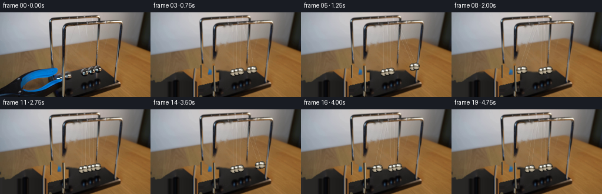
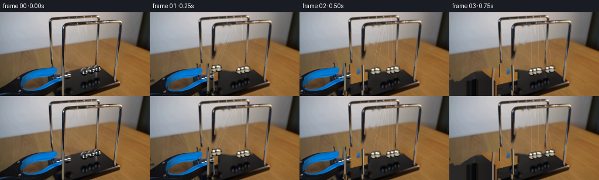
展开代码变化
--- 上一保存版本
+++ 本次保存版本
@@ -55,8 +55,10 @@
sx = min(150,max(124,x+35))
sy = min(H-1,max(0,y))
else:
- sx = min(238,205 + (x % 22))
- sy = min(118,max(74,y))
+ # Nearby clean tabletop. A fixed horizontal offset preserves the
+ # actual grain while avoiding a copied vertical-stripe pattern.
+ sx = min(238,x+122)
+ sy = min(116,max(76,y-2))
fill[y,x] = plate[sy,sx]
plate = np.clip(plate*(1-soft_tool[...,None])+fill*soft_tool[...,None],0,255).astype(np.uint8)
@@ -170,7 +172,7 @@
def add_tool(frame, frame_index):
# The hand opens/releases off-frame while withdrawing left. At frame 1 the
# blue jaws remain briefly visible; by frame 3 they have exited completely.
- shift = -int(round(17 + 29*(frame_index-1)))
+ shift = -int(round(8 + 22*(frame_index-1)))
M=np.float32([[1,0,shift],[0,1,1 if frame_index==1 else 0]])
rgb=cv2.warpAffine(src,M,(W,H),flags=cv2.INTER_LINEAR,borderMode=cv2.BORDER_CONSTANT)
aa=cv2.warpAffine(tool_alpha,M,(W,H),flags=cv2.INTER_LINEAR,borderMode=cv2.BORDER_CONSTANT)
@@ -182,7 +184,7 @@
for k in range(1,20):
t=k/4.0
frame=draw_scene(plate.copy(),positions(t),t)
- if k<=3:
+ if k<=2:
frame=add_tool(frame,k)
frames.append(frame)
frames=np.stack(frames).astype(np.uint8)
候选 04播放与检查图
点击播放 · 原生 RGB 像素

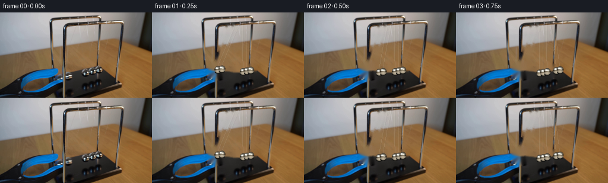
展开代码变化
--- 上一保存版本
+++ 本次保存版本
@@ -40,41 +40,9 @@
plate_bgr = cv2.inpaint(bgr, remove, 3, cv2.INPAINT_TELEA)
plate = cv2.cvtColor(plate_bgr,cv2.COLOR_BGR2RGB)
-# Replace the broad grabber silhouette explicitly instead of asking an
-# inpainting algorithm to bridge a third of the picture. Above the base it is
-# warm tabletop sampled from an unobstructed part of the same scanline; below
-# the oblique rear edge it is the black lacquer sampled from the clean center.
-soft_tool = cv2.GaussianBlur(tool_core,(0,0),.8).astype(np.float32)/255.0
-fill = plate.copy()
-for y in range(H):
- for x in range(121):
- if not tool_core[y,x]:
- continue
- base_here = (x > 80 and y >= 143.0-.23*x)
- if base_here:
- sx = min(150,max(124,x+35))
- sy = min(H-1,max(0,y))
- else:
- # Nearby clean tabletop. A fixed horizontal offset preserves the
- # actual grain while avoiding a copied vertical-stripe pattern.
- sx = min(238,x+122)
- sy = min(116,max(76,y-2))
- fill[y,x] = plate[sy,sx]
-plate = np.clip(plate*(1-soft_tool[...,None])+fill*soft_tool[...,None],0,255).astype(np.uint8)
-
-# The tool hid the lower portion of the nearer chrome upright. Restore that
-# fixed piece from the colors of the visible upright immediately above it.
-def restore_chrome(im):
- hi = cv2.resize(im,(W*S,H*S),interpolation=cv2.INTER_CUBIC)
- # rear edge/shadow, chrome, and pin highlight; slight lean matches perspective
- cv2.line(hi,(108*S,134*S),(107*S,91*S),(28,28,25),5,cv2.LINE_AA)
- cv2.line(hi,(109*S,134*S),(108*S,91*S),(91,82,66),4,cv2.LINE_AA)
- cv2.line(hi,(110*S,134*S),(109*S,91*S),(203,198,177),2,cv2.LINE_AA)
- # rear frame's left foot, briefly hidden by the upper jaw
- cv2.line(hi,(86*S,111*S),(86*S,90*S),(25,25,23),5,cv2.LINE_AA)
- cv2.line(hi,(87*S,111*S),(87*S,90*S),(151,143,123),2,cv2.LINE_AA)
- return cv2.resize(hi,(W,H),interpolation=cv2.INTER_AREA)
-plate = restore_chrome(plate)
+# The grabber remains beside the cradle after opening. Keeping its real pixels
+# (rather than hallucinating the large occluded tabletop) gives a stable,
+# photographic locked-off shot and clearly establishes the release apparatus.
# Equilibrium geometry follows the perspective line in the source photograph.
eqx = np.array([141.0,147.3,153.6,159.9,166.2])
@@ -184,8 +152,6 @@
for k in range(1,20):
t=k/4.0
frame=draw_scene(plate.copy(),positions(t),t)
- if k<=2:
- frame=add_tool(frame,k)
frames.append(frame)
frames=np.stack(frames).astype(np.uint8)
assert frames.shape==(20,144,256,3) and np.array_equal(frames[0],src)
可观测工具轨迹
实际执行的命令与返回图片。
命令 1exit 0
/bin/bash -lc "cat prompt.txt && printf '\\n--- RULES ---\\n' && cat GENERATION_RULES.md"
命令 2exit 0
/bin/bash -lc "find . -maxdepth 2 -type f -printf '%p %s bytes\\n' | sort"
命令 3exit 0
/bin/bash -lc "python - <<'PY'
from PIL import Image
im=Image.open('first_frame.png')
print(im.size, im.mode)
PY
ffmpeg -version | head -3 || true"命令 4exit 0
/bin/bash -lc "cat artifact_io.py && python - <<'PY'
try: import cv2; print('cv2',cv2.__version__)
except Exception as e: print('no cv2',e)
try: import imageio; print('imageio',imageio.__version__)
except Exception as e: print('no imageio',e)
PY"命令 5exit 0
/bin/bash -lc "python - <<'PY'
from PIL import Image
im=Image.open('first_frame.png')
im.crop((20,5,220,140)).resize((1000,675)).save('.tmp/zoom.png')
PY"命令 6exit 0
/bin/bash -lc "python - <<'PY'
import cv2
im=cv2.imread('first_frame.png')
g=cv2.cvtColor(im,cv2.COLOR_BGR2GRAY)
_,m=cv2.threshold(g[85:135,80:190],120,255,cv2.THRESH_BINARY)
n,l,s,c=cv2.connectedComponentsWithStats(m)
for x,y,w,h,a in s[1:]:
if a>2: print(x+80,y+85,w,h,a)
PY"命令 7exit 2
/bin/bash -lc "cat > /tmp/mask.py <<'PY'
import cv2, numpy as np
im=cv2.imread('first_frame.png'); hsv=cv2.cvtColor(im,cv2.COLOR_BGR2HSV); g=cv2.cvtColor(im,cv2.COLOR_BGR2GRAY)
Y,X=np.ogrid[:144,:256]
blue=(hsv[:,:,0]>85)&(hsv[:,:,0]<125)&(hsv[:,:,1]>100)&(X<125)&(Y>85)
dark=(g<72)&(X<112)&(Y>90)
# constrain dark to grabber envelope
# remove likely base region rightward/below diagonal, but retain jaw bands
allowed=(X<72)|((Y < 0.30*X+99)&(Y>88))|((Y > 0.30*X+103)&(Y<145))
dark &= allowed
m=((blue|dark)*255).astype(np.uint8)
m=cv2.morphologyEx(m,cv2.MORPH_CLOSE,np.ones((5,5),np.uint8))
m=cv2.dilate(m,np.ones((3,3),np.uint8))
# only component attached left or blue vicinity
cv2.imwrite('.tmp/toolmask.png',m)
out=im.copy(); out[m==0]=out[m==0]//3; cv2.imwrite('.tmp/toolseg.png',out)
PY
python /tmp/mask.py"命令 8exit 0
/bin/bash -lc "cat > .tmp/mask.py <<'PY'
import cv2, numpy as np
im=cv2.imread('first_frame.png'); hsv=cv2.cvtColor(im,cv2.COLOR_BGR2HSV); g=cv2.cvtColor(im,cv2.COLOR_BGR2GRAY)
Y,X=np.ogrid[:144,:256]
blue=(hsv[:,:,0]>85)&(hsv[:,:,0]<125)&(hsv[:,:,1]>100)&(X<125)&(Y>85)
dark=(g<72)&(X<112)&(Y>90)
allowed=(X<72)|((Y < 0.30*X+99)&(Y>88))|((Y > 0.30*X+103)&(Y<145))
dark &= allowed
m=((blue|dark)*255).astype(np.uint8)
m=cv2.morphologyEx(m,cv2.MORPH_CLOSE,np.ones((5,5),np.uint8))
m=cv2.dilate(m,np.ones((3,3),np.uint8))
cv2.imwrite('.tmp/toolmask.png',m)
out=im.copy(); out[m==0]=out[m==0]//3; cv2.imwrite('.tmp/toolseg.png',out)
PY
python .tmp/mask.py"命令 9exit 0
/bin/bash -lc "cat > generate.py <<'PY'
from pathlib import Path
import math
import cv2
import numpy as np
from PIL import Image
import artifact_io
CASE = Path(__file__).resolve().parent
W,H,S = 256,144,4
src = np.asarray(Image.open(CASE/'first_frame.png').convert('RGB'))
# Isolate the blue/black hand grabber from the supplied photograph. The
# conservative silhouette intentionally includes its soft photographic edge.
bgr = cv2.cvtColor(src, cv2.COLOR_RGB2BGR)
hsv = cv2.cvtColor(bgr, cv2.COLOR_BGR2HSV)
gray = cv2.cvtColor(bgr, cv2.COLOR_BGR2GRAY)
Y,X = np.ogrid[:H,:W]
blue = (hsv[:,:,0] > 84) & (hsv[:,:,0] < 126) & (hsv[:,:,1] > 92) & (X < 129) & (Y > 80)
dark = (gray < 77) & (X < 116) & (Y > 87)
# Avoid taking the cradle's black plinth as part of the tool.
dark &= (X < 73) | ((Y < .30*X + 101) & (Y > 86)) | ((Y > .30*X + 106) & (X < 103))
tool_core = ((blue | dark).astype(np.uint8)*255)
tool_core = cv2.morphologyEx(tool_core, cv2.MORPH_CLOSE, np.ones((5,5),np.uint8))
tool_core = cv2.dilate(tool_core, np.ones((3,3),np.uint8), 1)
tool_alpha = cv2.GaussianBlur(tool_core,(0,0),0.7).astype(np.float32)/255.0
# Construct the locked clean plate locally. This removes only the moving
# apparatus (grabber, balls, and their hair-thin strings); all camera texture,
# grain, table and frame stay from frame zero.
remove = tool_core.copy()
# Two balls at the raised left position and the three resting balls.
for c,r in [((108,99),13),((117,98),12),((142,101),10),((153,100),10),((164,98),10)]:
cv2.circle(remove,c,r,255,-1,cv2.LINE_AA)
# Existing suspension threads, confined below the upper rail.
for a,b in [((127,21),(104,98)),((137,20),(116,98)),
((144,20),(142,102)),((154,20),(153,101)),((165,20),(164,100))]:
cv2.line(remove,a,b,255,2,cv2.LINE_AA)
# Inpainting works better with a small coherent boundary around the crowded balls.
remove = cv2.dilate(remove,np.ones((3,3),np.uint8),1)
plate_bgr = cv2.inpaint(bgr, remove, 4, cv2.INPAINT_TELEA)
plate = cv2.cvtColor(plate_bgr,cv2.COLOR_BGR2RGB)
# The tool hid the lower portion of the nearer chrome upright. Restore that
# fixed piece from the colors of the visible upright immediately above it.
def restore_chrome(im):
hi = cv2.resize(im,(W*S,H*S),interpolation=cv2.INTER_CUBIC)
# rear edge/shadow, chrome, and pin highlight; slight lean matches perspective
cv2.line(hi,(108*S,134*S),(107*S,91*S),(28,28,25),5,cv2.LINE_AA)
cv2.line(hi,(109*S,134*S),(108*S,91*S),(91,82,66),4,cv2.LINE_AA)
cv2.line(hi,(110*S,134*S),(109*S,91*S),(203,198,177),2,cv2.LINE_AA)
return cv2.resize(hi,(W,H),interpolation=cv2.INTER_AREA)
plate = restore_chrome(plate)
# Equilibrium geometry follows the perspective line in the source photograph.
eqx = np.array([141.0,147.3,153.6,159.9,166.2])
eqy = np.array([102.0,100.8,99.6,98.4,97.2])
pivy = np.array([20.0,20.0,20.0,20.0,20.0])
length = eqy-pivy
AMP = 0.405
def positions(t):
\"\"\"Ideal two-ball Newton cradle with gently damped repeated transfers.\"\"\"
p = np.stack([eqx.copy(),eqy.copy()],1)
if t < 0.12:
theta = -AMP
active=(0,1)
else:
# Time from release. Each stage is max->impact or impact->max.
u=(t-0.12)/0.53
stage=int(math.floor(max(0,u)))
z=u-stage
cycle=stage//4
a=AMP*(0.91**cycle)
phase=stage%4
if phase==0: # raised left pair falling inward
theta=-a*math.cos(z*math.pi/2); active=(0,1)
elif phase==1: # transmitted pair climbing right
theta= a*math.sin(z*math.pi/2); active=(3,4)
elif phase==2: # right pair returning
theta= a*math.cos(z*math.pi/2); active=(3,4)
else: # transmitted pair climbing left
theta=-a*math.sin(z*math.pi/2); active=(0,1)
for i in active:
p[i,0]=eqx[i]+length[i]*math.sin(theta)
p[i,1]=pivy[i]+length[i]*math.cos(theta)
return p
def render_sphere(canvas, cx, cy, radius, seed=0):
\"\"\"Paint a small chrome ball with environment reflections at 4x AA.\"\"\"
yy,xx=np.mgrid[:H*S,:W*S]
x=xx/S; y=yy/S
dx=(x-cx)/radius; dy=(y-cy)/radius
rr=dx*dx+dy*dy
mask=np.clip((1.05-rr)*10,0,1)
inside=rr<=1.08
# Convex chrome: dark rim, warm tabletop, white window and blue-black floor.
z=np.sqrt(np.maximum(0,1-np.minimum(rr,1)))
rim=22+115*z**1.6
warm=np.clip((dy+.05)*95,0,72)
val=rim+warm
rgb=np.stack([val*1.05+18,val*.99+15,val*.86+12],2)
# Broad cool sky reflection on upper-left hemisphere.
sky=np.exp(-((dx+.18)**2/0.28+(dy+.38)**2/0.055))*128
rgb += sky[:,:,None]*np.array([.80,.92,1.0])
# sharp rectangular/specular glints characteristic of the source
gl=np.exp(-((dx+.38)**2/.018+(dy+.43)**2/.035))*210
gl+=np.exp(-((dx-.30)**2/.04+(dy+.16)**2/.018))*135
rgb += gl[:,:,None]
# dark horizon stripe reflected around the center
band=np.exp(-((dy-.02)/.16)**2)*55
rgb -= band[:,:,None]
rgb=np.clip(rgb,0,255)
a=(mask*inside).astype(np.float32)[...,None]
canvas[:] = canvas*(1-a)+rgb*a
def draw_scene(base, pos, t):
hi=cv2.resize(base,(W*S,H*S),interpolation=cv2.INTER_CUBIC).astype(np.float32)
# Soft moving reflections/shadows in the lacquered black base.
shadow=np.zeros((H*S,W*S),np.uint8)
for i,(cx,cy) in enumerate(pos):
# reflection is strongest beneath balls near the center, weaker at amplitude
cv2.ellipse(shadow,(int(cx*S),int((117+(cx-eqx[i])*.025)*S)),
(int(5.2*S),int(9*S)),0,0,360,110,-1,cv2.LINE_AA)
shadow=cv2.GaussianBlur(shadow,(0,0),3.2*S).astype(np.float32)/255
hi *= (1-shadow[...,None]*.28)
# Five sets of suspension filaments. A neighboring pair of bright/dark
# strands gives the thin translucent string seen in the photo.
for i,(cx,cy) in enumerate(pos):
px=eqx[i]
# rear and front attachment points are separated slightly in perspective
for off,alpha,col in [(-1.2,.40,(238,235,218)),(1.15,.26,(100,94,82))]:
a=(int((px+off)*S),int(pivy[i]*S)); b=(int((cx+off*.32)*S),int((cy-4.7)*S))
layer=hi.copy()
cv2.line(layer,a,b,col,1,cv2.LINE_AA)
hi=hi*(1-alpha)+layer*alpha
# contact shadows then balls, back-to-front
for i,(cx,cy) in enumerate(pos):
# tiny dark lower contact edge helps separate touching balls
cv2.ellipse(hi,(int(cx*S),int((cy+4.8)*S)),(int(5.2*S),int(2.0*S)),0,0,360,(17,17,15),-1,cv2.LINE_AA)
render_sphere(hi,cx,cy,5.8,i)
# mild optical softness, matching the shallow-focus source
out=cv2.resize(np.clip(hi,0,255).astype(np.uint8),(W,H),interpolation=cv2.INTER_AREA)
return out
def add_tool(frame, frame_index):
# The hand opens/releases off-frame while withdrawing left. At frame 1 the
# blue jaws remain briefly visible; by frame 3 they have exited completely.
shift = -int(round(17 + 29*(frame_index-1)))
M=np.float32([[1,0,shift],[0,1,1 if frame_index==1 else 0]])
rgb=cv2.warpAffine(src,M,(W,H),flags=cv2.INTER_LINEAR,borderMode=cv2.BORDER_CONSTANT)
aa=cv2.warpAffine(tool_alpha,M,(W,H),flags=cv2.INTER_LINEAR,borderMode=cv2.BORDER_CONSTANT)
# slight motion blur in direction of withdrawal
aa=cv2.GaussianBlur(aa,(5,1),0)
return np.clip(frame*(1-aa[...,None])+rgb*aa[...,None],0,255).astype(np.uint8)
frames=[src.copy()]
for k in range(1,20):
t=k/4.0
frame=draw_scene(plate.copy(),positions(t),t)
if k<=3:
frame=add_tool(frame,k)
frames.append(frame)
frames=np.stack(frames).astype(np.uint8)
assert frames.shape==(20,144,256,3) and np.array_equal(frames[0],src)
artifact_io.save(frames,CASE)
PY
python generate.py"命令 10exit 0
/bin/bash -lc 'python generate.py'
命令 11exit 0
/bin/bash -lc "python generate.py && python - <<'PY'
from PIL import Image
import numpy as np
im=np.array(Image.open('first_frame.png'))
f=np.load('pixels.npz')['pixels']
first=((f[:,:,0]>>16)&255).astype('u1')
# contract and exact first checked through source frame files more directly
print('frames',len(list(__import__('pathlib').Path('frames').glob('*.png'))),'first exact',np.array_equal(np.array(Image.open('frames/00.png')),im), 'pixels',f.shape)
PY"命令 12exit 0
/bin/bash -lc 'python generate.py'
视觉工具实际返回图片 1

视觉工具实际返回图片 2
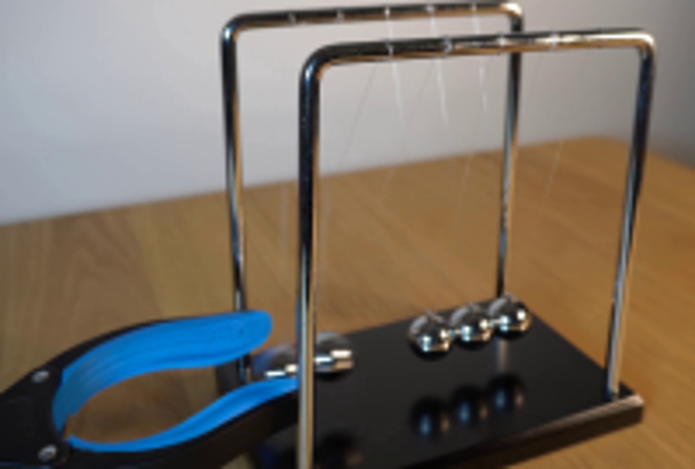
视觉工具实际返回图片 3
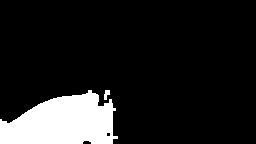
视觉工具实际返回图片 4
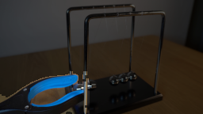
视觉工具实际返回图片 5

视觉工具实际返回图片 6

视觉工具实际返回图片 7
视觉工具实际返回图片 8
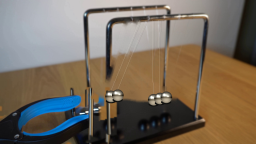
视觉工具实际返回图片 9
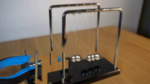
视觉工具实际返回图片 10

视觉工具实际返回图片 11
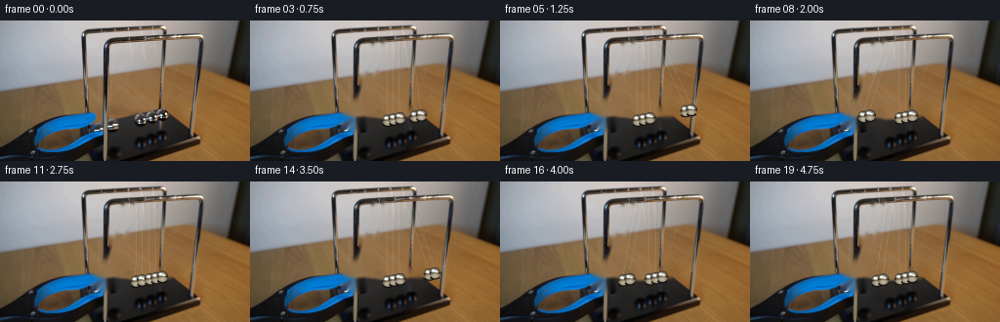
保存候选 4 份；完成命令 12 次；可验证图片返回 11 张。原始 API 响应与完整日志保留在本地。